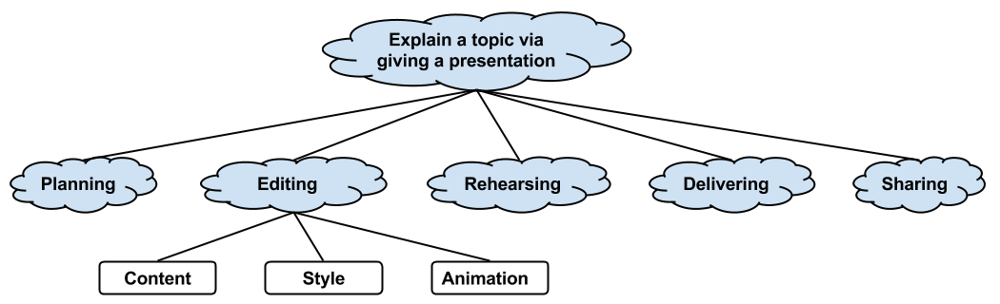
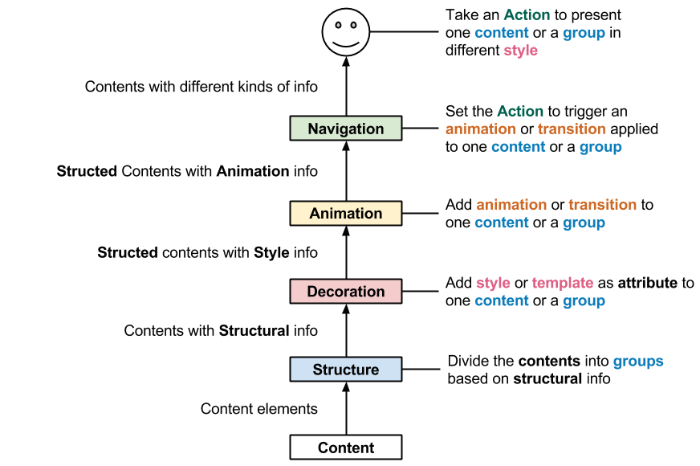

In the plain text content , if a paragraph with a MathJax Equation followed by a definition list of its notation, then they will be classified as a kind of user defined relationship: Equation and Notation List1
For Example -- Single Item:
\(F = G \frac{m_1 m_2}{r^2} \)2
For Example -- Inline inside a paragraph : In modern language, Newton's law of universal gravitation is Every point mass attracts every single other point mass by a force pointing along the line intersecting both points. \(F = G \frac{m_1 m_2}{r^2} \) The force is proportional to the product of the two masses and inversely proportional to the square of the distance between them. 3
We use MathJax to displays mathematical notation using MathML, LaTeX and ASCIIMathML markup.
For Example -- Block inside aparagraph: In modern language, Newton's law of universal gravitation is Every point mass attracts every single other point mass by a force pointing along the line intersecting both points. $$ F = G \frac{m_1 m_2}{r^2} $$ The force is proportional to the product of the two masses and inversely proportional to the square of the distance between them. 2
Markdown 1.0.1 (18 KB) -- 17 Dec 2004

A Cross Product Formula
When \(a \ne 0\), there are two solutions to \[ax^2 + bx + c = 0\] and they are $$x = {-b \pm \sqrt{b^2-4ac} \over 2a}.$$
Markdown is a text-to-HTML conversion tool for web writers. Markdown allows you to write using an easy-to-read, easy-to-write plain text format, then convert it to structurally valid XHTML (or HTML).
The overriding design goal for Markdown's formatting syntax is to make it as readable as possible. The idea is that a Markdown-formatted document should be publishable as-is, as plain text, without looking like it's been marked up with tags or formatting instructions. While Markdown's syntax has been influenced by several existing text-to-HTML filters, the single biggest source of inspiration for Markdown's syntax is the format of plain text email.
The best way to get a feel for Markdown's formatting syntax is simply to look at a Markdown-formatted document. For example, you can view the Markdown source for the article text on this page here: http://daringfireball.net/projects/markdown/index.text

Markdown is free software, available under a BSD-style open source license. See the License page for more information.
I've set up a public mailing list for discussion about Markdown. Any topic related to Markdown -- both its formatting syntax and its software -- is fair game for discussion. Anyone who is interested is welcome to join.
It's my hope that the mailing list will lead to good ideas for future improvements to Markdown.
Markdown requires Perl 5.6.0 or later. Welcome to the 21st Century. Markdown also requires the standard Perl library module Digest::MD5, which is probably already installed on your server.
Markdown works with Movable Type version 2.6 or later (including Movable Type 3.0).
Copy the "Markdown.pl" file into your Movable Type "plugins" directory. The "plugins" directory should be in the same directory as "mt.cgi"; if the "plugins" directory doesn't already exist, use your FTP program to create it. Your installation should look like this:
(mt home)/plugins/Markdown.pl
Once installed, Markdown will appear as an option in Movable Type's Text Formatting pop-up menu. This is selectable on a per-post basis:
Markdown translates your posts to HTML when you publish; the posts themselves are stored in your MT database in Markdown format.
If you also install SmartyPants 1.5 (or later), Markdown will offer a second text formatting option: "Markdown With SmartyPants". This option is the same as the regular "Markdown" formatter, except that it automatically uses SmartyPants to create typographically correct curly quotes, em-dashes, and ellipses. See the SmartyPants web page for more information.
To make Markdown (or "Markdown With SmartyPants") your default text formatting option for new posts, go to Weblog Config: Preferences.
Note that by default, Markdown produces XHTML output. To configure Markdown to produce HTML 4 output, see "Configuration", below.
Markdown works with Blosxom version 2.0 or later.
Rename the "Markdown.pl" plug-in to "Markdown" (case is important). Movable Type requires plug-ins to have a ".pl" extension; Blosxom forbids it.
Copy the "Markdown" plug-in file to your Blosxom plug-ins folder. If you're not sure where your Blosxom plug-ins folder is, see the Blosxom documentation for information.
That's it. The entries in your weblog will now automatically be processed by Markdown.
If you'd like to apply Markdown formatting only to certain posts, rather than all of them, Markdown can optionally be used in conjunction with Blosxom's Meta plug-in. First, install the Meta plug-in. Next, open the Markdown plug-in file in a text editor, and set the configuration variable $g_blosxom_use_meta to 1. Then, simply include a "meta-markup: Markdown" header line at the top of each post you compose using Markdown.
Markdown works with BBEdit 6.1 or later on Mac OS X. It also works with BBEdit 5.1 or later and MacPerl 5.6.1 on Mac OS 8.6 or later. If you're running Mac OS X 10.2 (Jaguar), you may need to install the Perl module Digest::MD5 from CPAN; Digest::MD5 comes pre-installed on Mac OS X 10.3 (Panther).
Copy the "Markdown.pl" file to appropriate filters folder in your "BBEdit Support" folder. On Mac OS X, this should be:
BBEdit Support/Unix Support/Unix Filters/See the BBEdit documentation for more details on the location of these folders.
You can rename "Markdown.pl" to whatever you wish.
That's it. To use Markdown, select some text in a BBEdit document, then choose Markdown from the Filters sub-menu in the "#!" menu, or the Filters floating palette
By default, Markdown produces XHTML output for tags with empty elements.E.g.:
<br />Markdown can be configured to produce HTML-style tags; e.g.:
<br>You need to use a special MTMarkdownOptions container tag in each Movable Type template where you want HTML 4-style output:
<MTMarkdownOptions output='html4'> ... put your entry content here ...</MTMarkdownOptions>The easiest way to use MTMarkdownOptions is probably to put the opening tag right after your <body> tag, and the closing tag right before </body>.
To suppress Markdown processing in a particular template, i.e. to publish the raw Markdown-formatted text without translation into (X)HTML, set the output attribute to 'raw':
<MTMarkdownOptions output='raw'> ... put your entry content here ...</MTMarkdownOptions>Use the --html4tags command-line switch to produce HTML output from a Unix-style command line. E.g.:
% perl Markdown.pl --html4tags foo.textType perldoc Markdown.pl, or read the POD documentation within the Markdown.pl source code for more information.
Aaron Swartz deserves a tremendous amount of credit for his feedback on the design of Markdown's formatting syntax. Markdown is much better thanks to Aaron's ideas, feedback, and testing. Also, Aaron's html2text is a very handy (and free) utility for turning HTML into Markdown-formatted plain text.
Nathaniel Irons, Dan Benjamin, Daniel Bogan, and Jason Perkins also deserve thanks for their feedback.
Michel Fortin has ported Markdown to PHP; it's a splendid port, and highly recommended for anyone looking for a PHP implementation of Markdown.
We use MathJax to displays mathematical notation using MathML, LaTeX and ASCIIMathML markup.
Block inside aparagraph: In modern language, Newton's law of universal gravitation is Every point mass attracts every single other point mass by a force pointing along the line intersecting both points. $$ F = G \frac{m_1 m_2}{r^2} $$ The force is proportional to the product of the two masses and inversely proportional to the square of the distance between them.
Block inside aparagraph: In modern language, Newton's law of universal gravitation is Every point mass attracts every single other point mass by a force pointing along the line intersecting both points. $$ F = G \frac{m_1 m_2}{r^2} $$ The force is proportional to the product of the two masses and inversely proportional to the square of the distance between them. ↩